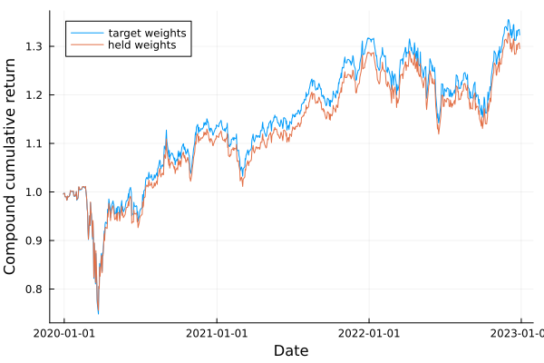

The source files can be found in examples/.
Weight drift and held weights: reading a backtest as a fund holds it
A backtest reads a fold in two places, and each place asks a question that has two honest answers.
The first place is the return series. X * w net of fees is the reading the optimiser maximises: it holds the weights fixed and lets the returns arrive. It is the right reading of the decision. It is not the reading of a fund. A fund buys the weights once, and each position then grows at its own return, so what it holds moves away from what it chose. The library calls that movement Weight Drift.
The second place is the weights the next fold starts from. The fold loop threads the previous fold's target weights, so Turnover, TurnoverEstimator, WeightsTracking, TurnoverRiskMeasure and the turnover fee measure the change in the decision. A fund does not trade the change in the decision. It trades the distance from what it holds to what it now wants, and that distance is larger. The library calls the choice between them the Previous-Weights Source.
The two questions are two switches, wd and pws, and they are independent. nothing on either one is the library's original behaviour, so nothing in a caller's existing run moves until that caller sets a field. See docs/adr/0110-the-two-evaluation-switches-are-separate-and-the-library-does-not-bundle-them.md for why the library keeps them apart.
Reach for wd when the number you report is meant to be the number a fund earned, and the holding period is long enough for the positions to move apart — a quarterly or annual rebalance, a volatile universe, or a book that is not rebalanced between decisions. Reach for pws when something in the optimiser reads previous weights and you want it to bind on the trade rather than on the decision: a turnover cap, a turnover fee, or weights-based tracking. Leave both unset when you are comparing optimisers rather than reporting a fund.
This example runs one walk-forward under both conventions and reads the difference.
- The setup: one universe, one optimiser, one walk-forward.
- The first switch, on and off, and what it does to the series.
- Inside one fold: the weight path, and the weights carried forward.
- The second switch, and the turnover cap that means two different things.
- The one-off cost and its clock, which is a third switch and orthogonal to both.
- What to take away.
using PortfolioOptimisers, CSV, TimeSeries, DataFrames, PrettyTables, Clarabel, Statistics, StatsPlots# Format for pretty tables.tsfmt = (v, i, j) -> begin return j == 1 ? Date(v) : vend;pctfmt = (v, i, j) -> begin return if j == 1 v else isa(v, Number) ? "$(round(v * 100, digits = 3)) %" : v endend;numfmt = (v, i, j) -> begin return isa(v, Number) ? round(v; sigdigits = 5) : vend;1. Setting up
Four years of daily data on a small universe. The walk-forward trains on one year and tests on half a year, which is a long enough holding period for the positions to move apart: that is the whole subject of this page, and a fold of a few days would show nothing.
X = TimeArray(CSV.File(joinpath(@__DIR__, "..", "SP500.csv.gz")); timestamp = :Date)[(end - 252 * 4):end]pretty_table(X[(end - 4):end]; formatters = [tsfmt])rd = prices_to_returns(X)N = size(rd.X, 2)slv = Solver(; name = :clarabel, solver = Clarabel.Optimizer, settings = Dict("verbose" => false), check_sol = (; allow_local = true, allow_almost = true))mr = MeanRisk(; opt = JuMPOptimiser(; slv = slv))MeanRisk
opt ┼ JuMPOptimiser
│ pe ┼ EmpiricalPrior
│ │ ce ┼ PortfolioOptimisersCovariance
│ │ │ ce ┼ Covariance
│ │ │ │ me ┼ SimpleExpectedReturns
│ │ │ │ │ w ┴ nothing
│ │ │ │ ce ┼ GeneralCovariance
│ │ │ │ │ ce ┼ SimpleCovariance: SimpleCovariance(true)
│ │ │ │ │ w ┴ nothing
│ │ │ │ alg ┼ FullMoment()
│ │ │ │ w ┴ nothing
│ │ │ mp ┼ MatrixProcessing
│ │ │ │ pdm ┼ Posdef
│ │ │ │ │ alg ┼ UnionAll: NearestCorrelationMatrix.Newton
│ │ │ │ │ kwargs ┴ @NamedTuple{}: NamedTuple()
│ │ │ │ dn ┼ nothing
│ │ │ │ dt ┼ nothing
│ │ │ │ alg ┼ nothing
│ │ │ │ order ┴ NTuple{4, Symbol}: (:pdm, :dn, :dt, :alg)
│ │ me ┼ SimpleExpectedReturns
│ │ │ w ┴ nothing
│ │ horizon ┴ nothing
│ slv ┼ Solver
│ │ name ┼ Symbol: :clarabel
│ │ solver ┼ UnionAll: Clarabel.MOIwrapper.Optimizer
│ │ settings ┼ Dict{String, Bool}: Dict{String, Bool}("verbose" => 0)
│ │ check_sol ┼ @NamedTuple{allow_local::Bool, allow_almost::Bool}: (allow_local = true, allow_almost = true)
│ │ add_bridges ┴ Bool: true
│ wb ┼ WeightBounds
│ │ lb ┼ Float64: 0.0
│ │ ub ┴ Float64: 1.0
│ bgt ┼ Float64: 1.0
│ sbgt ┼ nothing
│ gbgt ┼ nothing
│ xbgt ┼ Bool: false
│ lt ┼ nothing
│ st ┼ nothing
│ lcse ┼ nothing
│ cte ┼ nothing
│ gcarde ┼ nothing
│ sgcarde ┼ nothing
│ smtx ┼ nothing
│ sgmtx ┼ nothing
│ slt ┼ nothing
│ sst ┼ nothing
│ sglt ┼ nothing
│ sgst ┼ nothing
│ tn ┼ nothing
│ fees ┼ nothing
│ sets ┼ nothing
│ tr ┼ nothing
│ ple ┼ nothing
│ ret ┼ ArithmeticReturn
│ │ settings ┼ JuMPReturnsSettings
│ │ │ scale ┼ Float64: 1.0
│ │ │ lb ┼ nothing
│ │ │ rte ┼ Bool: true
│ │ │ fee ┼ Bool: true
│ │ │ mic ┴ Bool: true
│ │ ucs ┼ nothing
│ │ mu ┴ nothing
│ sca ┼ SumScalariser()
│ ccnt ┼ nothing
│ cobj ┼ nothing
│ sc ┼ Int64: 1
│ so ┼ Int64: 1
│ ss ┼ nothing
│ card ┼ nothing
│ scard ┼ nothing
│ l2c ┼ nothing
│ lpc ┼ nothing
│ linfc ┼ nothing
│ l1 ┼ nothing
│ l2 ┼ nothing
│ lp ┼ nothing
│ linf ┼ nothing
│ brt ┼ Bool: false
│ x_src ┼ Symbol: :prior
│ strict ┴ Bool: false
r ┼ Variance
│ settings ┼ RiskMeasureSettings
│ │ scale ┼ Float64: 1.0
│ │ ub ┼ nothing
│ │ rke ┴ Bool: true
│ sigma ┼ nothing
│ chol ┼ nothing
│ rc ┼ nothing
│ alg ┴ SquaredSOCRiskExpr()
obj ┼ MinimumRisk()
wi ┼ nothing
fb ┴ nothing
Two schemes, identical but for the first switch. SelfFinancingDrift is the one Weight Drift the library ships: every position grows at its own return, the implicit cash position 1 - sum(w) earns nothing, and the weights are renormalised by the wealth of the moment, so they still sum to what they summed to at the start.
store_weight_path = true asks the drifted scheme to keep the path it computes. A reader who does not ask for it rebuilds the path from the record instead, and the rebuild is bit-identical, so the flag buys time rather than an answer.
wf_target = IndexWalkForward(252, 126)wf_held = IndexWalkForward(252, 126; wd = SelfFinancingDrift(), store_weight_path = true)IndexWalkForward
train_size ┼ Int64: 252
test_size ┼ Int64: 126
purged_size ┼ Int64: 0
expand_train ┼ Bool: false
reduce_test ┼ Bool: false
wd ┼ SelfFinancingDrift()
pws ┼ nothing
store_weight_path ┼ Bool: true
strict ┴ Bool: false
2. One walk-forward, two readings
The two runs solve exactly the same optimisation problems. Nothing in the fit changes: the switch is a statement about how a fold's numbers are read, not about how its observations are split or how its weights are chosen.
pred_target = cross_val_predict(mr, rd, wf_target)pred_held = cross_val_predict(mr, rd, wf_held)# The decisions are identical; only the reading of them differs.all(pred_target.res[i].w ≈ pred_held.res[i].w for i in eachindex(pred_target.res))trueSo the two series come from one set of decisions, and every difference between them is the drift.
ret_target = pred_target.mrd.Xret_held = pred_held.mrd.Xsm = LowOrderMoment(; alg = SecondMoment())summary_df = DataFrame(:quantity => ["cumulative return", "mean return", "return volatility", "second moment", "worst drawdown"], Symbol("target weights") => [prod(1 .+ ret_target) - 1, mean(ret_target), std(ret_target), expected_risk(sm, pred_target), minimum(drawdowns(ret_target))], Symbol("held weights") => [prod(1 .+ ret_held) - 1, mean(ret_held), std(ret_held), expected_risk(sm, pred_held), minimum(drawdowns(ret_held))])pretty_table(summary_df; formatters = [numfmt])┌───────────────────┬────────────────┬──────────────┐
│ quantity │ target weights │ held weights │
│ String │ Float64 │ Float64 │
├───────────────────┼────────────────┼──────────────┤
│ cumulative return │ 0.32338 │ 0.29532 │
│ mean return │ 0.00045719 │ 0.00042588 │
│ return volatility │ 0.013163 │ 0.012933 │
│ second moment │ 0.00017326 │ 0.00016726 │
│ worst drawdown │ -0.27454 │ -0.26547 │
└───────────────────┴────────────────┴──────────────┘The drifted reading is the lower one on every line that measures return, and the lower one on every line that measures risk. Both directions have the same cause. A position that has grown carries a larger share of the book than the optimiser gave it, and a position that has shrunk carries a smaller one, so the drifted book is the book the market built out of the optimiser's choice rather than the book the optimiser chose. On this universe that book earns a little less and moves a little less.
Neither series is the "correct" one. The target series answers what did this rule decide, and the drifted series answers what would a fund holding that decision have earned. The two questions have two answers, and the switch says which one is being asked.
The largest single-day gap between them is the sharpest way to see that the difference is not rounding.
println("largest daily gap between the two readings = $(round(maximum(abs, ret_held .- ret_target) * 100, digits = 4)) %")plot(pred_target.mrd.ts, cumulative_returns(ret_target, true); label = "target weights", xlabel = "Date", ylabel = "Compound cumulative return", legend = :topleft)plot!(pred_held.mrd.ts, cumulative_returns(ret_held, true); label = "held weights")
3. Inside one fold: the weight path
A drifted fold carries a Held Weights record, HeldWeightsResult, in the hw field of its PredictionResult. A fold that did not drift carries nothing there, so a consumer that needs a path serves the one and refuses the other by dispatch rather than by a branch.
The record holds four things: the asset returns the fold was scored over, the weight path when the scheme stored it, the weights held after the last observation, and the Weight Drift form that produced them. The last of those is what makes a later rebuild bit-identical.
hw = pred_held.pred[1].hwU = hw.U# The path has one row per observation of the fold and one column per asset.size(U)(126, 20)The first row of the path is the target weight vector: the fold starts by holding exactly what it chose. Every row sums to what the first row sums to, because the drift renormalises by the wealth of the moment rather than letting the book inflate.
DataFrame(:row => ["first", "last"], Symbol("sums to") => [sum(U[1, :]), sum(U[end, :])], Symbol("equals the target") => [U[1, :] ≈ pred_held.res[1].w, U[end, :] ≈ pred_held.res[1].w])| Row | row | sums to | equals the target |
|---|---|---|---|
| String | Float64 | Bool | |
| 1 | first | 1.0 | true |
| 2 | last | 1.0 | false |
Here is the position that moved furthest over the fold, against the weight the optimiser gave it.
drift = U[end, :] .- U[1, :]j = argmax(abs.(drift))mover_df = DataFrame(:asset => [rd.nx[j]], Symbol("chosen") => [U[1, j]], Symbol("held at the end") => [U[end, j]], Symbol("drift") => [drift[j]])pretty_table(mover_df; formatters = [pctfmt])┌────────┬──────────┬─────────────────┬─────────┐
│ asset │ chosen │ held at the end │ drift │
│ String │ Float64 │ Float64 │ Float64 │
├────────┼──────────┼─────────────────┼─────────┤
│ CVX │ 11.588 % │ 9.228 % │ -2.36 % │
└────────┴──────────┴─────────────────┴─────────┘The record's w is not the last row of the path. The last row is what the fund held through the last observation; w is what it holds after that observation has happened, which is one step further on and is what the next fold starts from.
DataFrame(Symbol("largest entry, last path row") => [maximum(U[end, :])], Symbol("largest entry, carried forward") => [maximum(hw.w)], Symbol("largest gap between the two") => [maximum(abs, hw.w .- U[end, :])])| Row | largest entry, last path row | largest entry, carried forward | largest gap between the two |
|---|---|---|---|
| Float64 | Float64 | Float64 | |
| 1 | 0.241093 | 0.239703 | 0.00139017 |
4. The second switch: which weights the next fold starts from
pws changes nothing at all unless something in the optimiser reads previous weights. Put a turnover cap on the optimiser and it reads them, so the switch decides what the cap is a cap on.
The cap below is 1% per asset per rebalance. Turnover's own w is the starting book of the first fold; factory replaces it fold by fold with whatever the Previous-Weights Source supplies.
cap = 0.01mr_cap = MeanRisk(; opt = JuMPOptimiser(; slv = slv, tn = Turnover(; w = fill(1 / N, N), val = cap)))wf_decision = IndexWalkForward(252, 126; wd = SelfFinancingDrift())wf_trade = IndexWalkForward(252, 126; wd = SelfFinancingDrift(), pws = DriftedWeights())pred_decision = cross_val_predict(mr_cap, rd, wf_decision)pred_trade = cross_val_predict(mr_cap, rd, wf_trade)MultiPeriodPredictionResult
pred ┼ 6-element Vector{PredictionResult}
│ PredictionResult ⋯
│ PredictionResult ⋯
│ PredictionResult ⋯
│ PredictionResult ⋯
│ PredictionResult ⋯
│ PredictionResult ⋯
mrd ┼ PredictionReturnsResult
│ nx ┼ 20-element SubArray{String, 1, Vector{String}, Tuple{Base.Slice{Base.OneTo{Int64}}}, true}
│ X ┼ 756-element Vector{Float64}
│ nf ┼ nothing
│ F ┼ nothing
│ nb ┼ nothing
│ B ┼ nothing
│ ts ┼ 756-element Vector{Date}
│ iv ┼ nothing
│ ivpa ┴ nothing
id ┴ nothing
Both of these runs report that they ran sequentially, and neither run in section 2 did. The switch is not the cause: a run goes sequential when the optimiser reads previous weights, which the turnover cap does, and the drift adds no such dependency. That is the reason the library keeps the two switches apart rather than answering both questions with one flag — a caller who wants the fund's reading of the series and nothing else keeps a parallel run.
Two distances can be measured at each rebalance, and they are not the same distance.
- The decision change is
|w_next - w_prev_target|: how far this fold's answer moved from the last fold's answer. - The executed trade is
|w_next - w_prev_held|: how far the fund has to move the book it is actually holding.
function rebalance_distances(pred) n = length(pred.res) decision = [maximum(abs, pred.res[i + 1].w .- pred.res[i].w) for i in 1:(n - 1)] executed = [maximum(abs, pred.res[i + 1].w .- pred.pred[i].hw.w) for i in 1:(n - 1)] return decision, executedenddec_off, exe_off = rebalance_distances(pred_decision)dec_on, exe_on = rebalance_distances(pred_trade)cap_df = DataFrame(:rebalance => 1:length(dec_off), Symbol("source off: decision") => dec_off, Symbol("source off: executed") => exe_off, Symbol("source on: decision") => dec_on, Symbol("source on: executed") => exe_on)pretty_table(cap_df; formatters = [pctfmt])┌───────────┬──────────────────────┬──────────────────────┬─────────────────────┬─────────────────────┐
│ rebalance │ source off: decision │ source off: executed │ source on: decision │ source on: executed │
│ Int64 │ Float64 │ Float64 │ Float64 │ Float64 │
├───────────┼──────────────────────┼──────────────────────┼─────────────────────┼─────────────────────┤
│ 1 │ 1.0 % │ 2.134 % │ 2.867 % │ 1.0 % │
│ 2 │ 1.0 % │ 2.531 % │ 1.367 % │ 1.0 % │
│ 3 │ 1.0 % │ 3.356 % │ 2.47 % │ 1.0 % │
│ 4 │ 1.0 % │ 2.77 % │ 1.685 % │ 1.0 % │
│ 5 │ 1.0 % │ 2.452 % │ 3.246 % │ 1.0 % │
└───────────┴──────────────────────┴──────────────────────┴─────────────────────┴─────────────────────┘Read the two middle columns first. With the source off, the decision column sits at exactly the cap at every rebalance — the cap is doing its job — and the executed column is two to three times the cap. The constraint was honoured and the fund still traded three times what the caller asked for, because the drift moved the book while the decision stood still.
Now the two right-hand columns. With the source on, it is the executed column that sits at exactly the cap, and the decision column is the one that runs over. That is the same constraint, binding on the quantity a fund actually pays for.
A turnover cap therefore caps the trade only when the Previous-Weights Source says so. The same holds for a turnover fee, for TurnoverRiskMeasure and for WeightsTracking — every consumer that reads a previous weight vector reads whichever one the source supplies.
println("cap per asset per rebalance = $(round(cap * 100, digits = 3)) %")println("largest executed trade, source off = $(round(maximum(exe_off) * 100, digits = 3)) %")println("largest executed trade, source on = $(round(maximum(exe_on) * 100, digits = 3)) %")cap per asset per rebalance = 1.0 %
largest executed trade, source off = 3.356 %
largest executed trade, source on = 1.0 %5. The one-off cost and its clock
A turnover charge is paid once, on the trade. The library's fee terms are subtracted from every observation of a return series, so a turnover charge stated per rebalance is charged once per day over the whole holding period unless something spreads it.
AmortisedFees is what spreads it. It is the fa field of Fees and FeesEstimator, it reaches tn, fl and fs, and it never touches l or s, which are rates per period already. A bare AmortisedFees() divides by the fold's own length; a stated horizon overrides the fold.
This is a third switch, and it is orthogonal to the other two: a caller can drift without amortising and amortise without drifting.
fee_tn = Turnover(; w = fill(1 / N, N), val = 0.005)fees_full = Fees(; tn = fee_tn)fees_amortised = Fees(; tn = fee_tn, fa = AmortisedFees())pred_fee_full = cross_val_predict(MeanRisk(; opt = JuMPOptimiser(; slv = slv, fees = fees_full)), rd, wf_trade)pred_fee_amrt = cross_val_predict(MeanRisk(; opt = JuMPOptimiser(; slv = slv, fees = fees_amortised)), rd, wf_trade)fee_df = DataFrame(:quantity => ["cumulative return", "mean return"], Symbol("charged every day") => [prod(1 .+ pred_fee_full.mrd.X) - 1, mean(pred_fee_full.mrd.X)], Symbol("spread over the fold") => [prod(1 .+ pred_fee_amrt.mrd.X) - 1, mean(pred_fee_amrt.mrd.X)])pretty_table(fee_df; formatters = [numfmt])┌ Info: Running cross-validation sequentially because the folds of the cross-validation scheme are a timeline (folds_are_time_ordered(cv) == true) and the optimiser must use the previous optimisation's weights (needs_previous_weights(opt) == true). The second fact is because somewhere within the optimisation estimator is contained at least one of the following:
│ - Turnover and/or TurnoverEstimator,
│ - WeightsTracking,
│ - TurnoverRiskMeasure,
│ - custom constraints which use asset weights,
│ - custom objective penalties which use asset weights,
│ - a time-dependent constraint whose entries need previous weights (e.g. a PreviousWeightsFunction).
└ To enable parallel processing please either mark the weights as fixed or remove the offending component(s). Time-dependent constraints alone do not force sequential processing.
┌ Info: Running cross-validation sequentially because the folds of the cross-validation scheme are a timeline (folds_are_time_ordered(cv) == true) and the optimiser must use the previous optimisation's weights (needs_previous_weights(opt) == true). The second fact is because somewhere within the optimisation estimator is contained at least one of the following:
│ - Turnover and/or TurnoverEstimator,
│ - WeightsTracking,
│ - TurnoverRiskMeasure,
│ - custom constraints which use asset weights,
│ - custom objective penalties which use asset weights,
│ - a time-dependent constraint whose entries need previous weights (e.g. a PreviousWeightsFunction).
└ To enable parallel processing please either mark the weights as fixed or remove the offending component(s). Time-dependent constraints alone do not force sequential processing.
┌───────────────────┬───────────────────┬──────────────────────┐
│ quantity │ charged every day │ spread over the fold │
│ String │ Float64 │ Float64 │
├───────────────────┼───────────────────┼──────────────────────┤
│ cumulative return │ -0.91988 │ 0.2667 │
│ mean return │ -0.003249 │ 0.00039632 │
└───────────────────┴───────────────────┴──────────────────────┘A 0.5% turnover charge repeated on every one of a fold's observations is not a 0.5% turnover charge, and the first column is what that mistake costs. The second column charges the same trade once and lets the fold carry it.
The per-observation charge itself is the clearest statement of the ratio, and it is the fold's own length.
fold_len = size(pred_fee_amrt.pred[1].hw.X, 1)println("fold length = $(fold_len) observations")println("charge per observation, in full = $(round(calc_fees(pred_fee_full.res[1].w, fees_full), sigdigits = 5))")println("charge per observation, spread = $(round(calc_fees(pred_fee_amrt.res[1].w, Fees(; tn = fee_tn, fa = AmortisedFees(; horizon = fold_len))), sigdigits = 5))")fold length = 126 observations
charge per observation, in full = 0.0046252
charge per observation, spread = 3.6708e-5fa is read where a fee is charged against a return series. The JuMP model builds its own fee expressions from tn, fl and fs directly, so the objective of the fit charges the one-off terms in full whatever fa says. On this run the two fee settings above give bit-identical weights and two very different reported series. If the fit's own trade-off matters to you, state the rate you want the optimiser to see.
6. What to take away
- The two switches are independent, and each defaults to the library's original behaviour. A run that sets neither is unchanged.
wdsays what a fold's return series means: the decision's reading, or the fund's. It does not change a single weight.pwssays which weights the next fold starts from, and it matters only to the estimators that read previous weights. It changes weights, because it changes what those estimators see.- A turnover cap binds the decision when the source is off, and binds the trade when it is on. The executed trade under a source that is off can be several times the stated cap.
- A drifted fold carries a
HeldWeightsResult, and a fold that did not drift carries nothing there. The path is rebuilt from the record unlessstore_weight_pathasked for it, and the rebuild is bit-identical. - The weights carried forward are one step beyond the last row of the path, not the last row.
- The fee's clock is a third switch. A one-off charge left unamortised is charged on every observation of the fold, and on a long fold that is the difference between a strategy and a wreck.
This page was generated using Literate.jl.